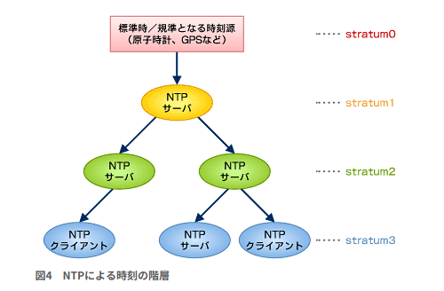

sequenceDiagram
participant HW as hardware clock
participant IT as interval timer
participant SC as system clock
participant NTP
HW->>SC: boot時に<br>hardware clockを反映
NTP->>SC: NTPによる時刻同期
IT->>SC: 割り込みにより<br>system clockを進める
SC->>HW: システム停止時に<br>system clockを反映
システムクロック
Definition 1 システムクロック
- OSが内部に持っている時計をシステムクロックという
- ファイルのタイムスタンプやプロセスやカーネルログの記録などに使用される
- システムクロック自体はUTCで管理される
- ハードウェアクロック(CMOS Clock)とは別物
Linuxシステムの時刻はシステムクロックによって管理されています．このシステムクロックは date コマンドで確認することができます
## Local timezone
$ date
Sat May 30 08:19:29 PM JST 2020
## UTC timezone
$ date -u
Sat May 30 11:19:29 AM UTC 2020
$ date --utc
Sat May 30 11:19:29 AM UTC 2020
## 一時的にNewYork TZ
$ TZ=New_York date
Thu Jan 29 05:54:45 PM New 2026
## Unixエポックの日時表示
$ date -d @1769729151
Fri Jan 30 08:25:51 AM JST 2026システムクロックはLinuxカーネルのメモリ上に次の２つのデータの組として保持されています:
- Unixエポック(1970-01-01 00:00:00)からの経過秒数
- 現在秒からの経過ナノ秒数
そして，インターバルタイマーの割り込みにより時計が進みます．
Example 1 (C言語によるシステムクロックの直接参照)
システムクロックはカーネル内で「Unixエポックからの経過秒数」と「ナノ秒」の組として保持されています． C言語の clock_gettime 関数（システムコール本体ではなくPOSIXが定義する時刻取得API）を使用すると，ライブラリおよびシステムコールを介して，カーネルメモリ上のこの生の値を直接取得できます
cat <<'EOF' | gcc -x c - -o cgt && ./cgt && rm -f cgt
#include <time.h> // clock_gettime, struct timespec の定義
#include <stdio.h>
int main() {
struct timespec ts;
/*
* clock_gettime()
*
* 関連するシステムコール:
* - SYS_clock_gettime (32bit time_t 環境)
* - SYS_clock_gettime64 (64bit time_t / Y2038 対応)
*
* 引数1: CLOCK_REALTIME
* - Unix Epoch (1970-01-01 00:00:00 UTC) からの実時間
* - NTP 等により前後に補正される可能性あり
*
* 引数2: &ts
* - 結果を格納する構造体のポインタ
*/
clock_gettime(CLOCK_REALTIME, &ts);
/*
ts.tv_sec : Unixエポックからの経過秒数
ts.tv_nsec: 現在秒からの経過ナノ秒数
*/
printf("%ld %ld\n", ts.tv_sec, ts.tv_nsec);
}
EOF上記をターミナルで実行すると 1769729151 441034261 という形式で，現在のシステムクロックの状態が出力されます．
1769729151: Unixエポックからの経過秒数441034261: 現在の秒数内でのナノ秒単位の経過（\(0 \sim 999,999,999\)）
Noteタイムゾーン情報
各タイムゾーンの時差情報は /usr/share/zoneinfo ディレクトリに格納されています．Linuxシステムインストール時に，指定されたタイムゾーンに従って， etc/localtime に /usr/share/zoneinfo 以下のタイムゾーンファイルへのシンボリックリンクが貼られ，この情報に従って，date コマンドの表示が ローカルタイムゾーン換算に変更されます．
$ ls -l /etc/localtime
lrwxrwxrwx 1 root root 30 May 29 2025 /etc/localtime -> /usr/share/zoneinfo/Asia/TokyoTZ 変数によるシステムタイムゾーンの上書き
TZ変数は，プロセスだけ別の時計を持たせるための環境変数です．
$ date
Sat Jan 31 10:31:39 PM JST 2026
$ TZ=Asia/Tokyo date
Sat Jan 31 10:31:56 PM JST 2026
$ TZ=UTC date
Sat Jan 31 01:32:06 PM UTC 2026
$ date
Sat Jan 31 10:32:25 PM JST 2026設定可能なタイムゾーン一覧の確認は，systemd環境ならば
timedatectl list-timezonesで確認することができます．
tzselect: 対話的に TZ 環境変数を決める
tzselect コマンドは，対話形式でタイムゾーンを選択するコマンドです． コマンドを実行しても，etc/localtime は変更されず，あくまで TZ 環境変数が設定されるだけです．
実行例は以下
$ tzselect
Please identify a location so that time zone rules can be set correctly.
Please select a continent, ocean, "coord", or "TZ".
1) Africa
2) Americas
3) Antarctica
4) Asia
5) Atlantic Ocean
6) Australia
7) Europe
8) Indian Ocean
9) Pacific Ocean
10) coord - I want to use geographical coordinates.
11) TZ - I want to specify the timezone using the Posix TZ format.
#? 4
Please select a country whose clocks agree with yours.
1) Afghanistan 30) Kyrgyzstan
2) Antarctica 31) Laos
3) Armenia 32) Lebanon
4) Australia 33) Macau
5) Azerbaijan 34) Malaysia
6) Bahrain 35) Mongolia
7) Bangladesh 36) Myanmar (Burma)
8) Bhutan 37) Nepal
9) Brunei 38) Oman
10) Cambodia 39) Pakistan
11) China 40) Palestine
12) Christmas Island 41) Philippines
13) Cocos (Keeling) Islands 42) Qatar
14) Cyprus 43) Réunion
15) East Timor 44) Russia
16) French S. Terr. 45) Saudi Arabia
17) Georgia 46) Seychelles
18) Hong Kong 47) Singapore
19) India 48) Sri Lanka
20) Indonesia 49) Syria
21) Iran 50) Taiwan
22) Iraq 51) Tajikistan
23) Israel 52) Thailand
24) Japan 53) Turkmenistan
25) Jordan 54) United Arab Emirates
26) Kazakhstan 55) Uzbekistan
27) Korea (North) 56) Vietnam
28) Korea (South) 57) Yemen
29) Kuwait
#? 24
The following information has been given:
Japan
Eyre Bird Observatory
Therefore TZ='Asia/Tokyo' will be used.
Selected time is now: Sat Jan 31 10:39:05 PM JST 2026.
Universal Time is now: Sat Jan 31 01:39:05 PM UTC 2026.
Is the above information OK?
1) Yes
2) No
#? 1
You can make this change permanent for yourself by appending the line
TZ='Asia/Tokyo'; export TZ
to the file '.profile' in your home directory; then log out and log in again.
Here is that TZ value again, this time on standard output so that you
can use the /usr/bin/tzselect command in shell scripts:
Asia/Tokyoハードウェアクロック
Definition 2 ハードウェアクロック
- ハードウェアクロックは，マザーボード上のICによって提供される時計
- バッテリーのバックアップがあるので，PCの電源を切っても時計が進む
- RTC（Real Time Clock）あるいはCMOSクロックとも呼ばれる
RTCはCMOSメモリ上にデータを保持しています．ハードウェアクロックの時刻はLinuxシステム立ち上げ時にhwclockコマンドで読み取られ，システムクロックに設定されます． また, システムの停止時に，hwclock コマンドによってシステムクロックの時刻がハードウェアクロックに設定されます.
hwclockコマンド
ハードウェアクロック操作に関係するコマンド hwclock は /dev/rtc デバイスを open() し，RTCのread/writeを行います．
$ ls -l /dev/rtc
lrwxrwxrwx 1 root root 4 Jan 31 21:39 /dev/rtc -> rtc0
$ ls -l /dev/rtc0
crw------- 1 root root 248, 0 Jan 31 21:39 /dev/rtc0となっているため，hwclock を用いたRTC表示などにはスーパーユーザー権限が必要であることがわかります．
| コマンド | 方向 | 何をするか |
|---|---|---|
sudo hwclock --show |
RTC → 表示 | ハードウェアクロック（RTC）の現在値を表示 |
sudo hwclock --systohc |
system → RTC | システムクロックの時刻をハードウェアクロックに書き込む |
sudo hwclock --hctosys |
RTC → system | ハードウェアクロックの時刻をシステムクロックに反映 |
Network Time Protocal
Note現在の Ubuntu / systemd 環境では標準的には使われていない
- Ubuntu 16.04以降では
timedatectl/timesyncがntpdate/ntpの代わりに用いられている ntpdateはデフォルトではインストールされていない場合が多い
Definition 3 Network Time Protocol
- NTPはコンピュータが，ネットワーク上のほかのコンピュータの時刻を参照して時刻の同期を取るためのプロトコル
- 時刻をstratumと呼ばれる階層で管理し，原子時計/GPS/標準電波などのレファレンスクロックが最上位の階層stratum0になり，最下位の階層stratum16まで階層化できる
- NTPデーモンやコマンドにより，システムクロックを設定できる
原子時計/GPS/標準電波が最上位の階層stratum0になり，それを時刻源とするNTPサーバがstratum1となります． stratum1のNTPサーバから時刻を受信するコンピュータ（NTPサーバあるいはNTPクライアント）はstratum2となります.

NTPクライアントとNTPサーバー
| 項目 | NTPクライアント | NTPサーバー |
|---|---|---|
| 役割 | 時刻を取得し、自身の時刻を同期・補正する | 正確な時刻を他のノードへ提供する |
| 時刻の参照先 | 上位 stratum の NTPサーバー | 上位 stratum、またはレファレンスクロック |
| stratum | サーバーより下位（数値が大きい） | 上位（数値が小さい） |
| 主な実装 | systemd-timesyncd, ntpdate |
ntpd |
NTPによる時刻修正方法
Definition 4 ntpdate コマンド
ntpdateコマンドは，NTPクライアントプログラムで，日付と時刻を NTP サーバーと同期することができる- kernelが管理するシステムクロックを変更するコマンドなので，実行にはroot権限が必要
- 基本的には，Step方式で時刻修正がされる
sudo ntpdate [option] NTP-serverNTPによる時刻修正は Slew と Step の2種類があります．
| 項目 | slew（徐々に補正） | step（即時補正） |
|---|---|---|
| 補正方法 | クロックの進み方を少しずつ調整 | 時刻を一気にジャンプさせる |
| 時刻の連続性 | ✅ 保たれる | ❌ 失われる |
| システムへの影響 | 小さい | 大きい |
| ログ・ジョブへの影響 | ほぼなし | 時刻逆行・重複の可能性あり |
ntpdate コマンドでは基本的には Step方式で時刻修正がされます．
## 強制step
sudo ntpdate -b ntp.ubuntu.com
## 擬似的Slew修正
sudo ntpdate -B ntp.ubuntu.com厳密には，-B オプションによる修正は，Slew方式修正ではなくカーネル PLL による周波数補正になります．
NTPサーバーとシステムクロックのオフセット確認
NTPサーバーとシステムクロックの差分(offset)を確認するには，ntpdate -q コマンドを用います．
$ sudo ntpdate -q ntp.nict.jp
31 MAy 02:19:09 ntpdate[5393]: step time server 133.243.238.243
offset 99.535574 sec今回の例では約99秒ほどsystem clockが遅れていることがわかります．先行している場合は-(マイナス)で表現されます．
NTPサーバーはDNS名で指定する
sudo ntpdate [option] NTP-server の NTP-server部分はDNS名（ホスト名）による指定が推奨されます． timedatectl timesync-status の出力を確認すると
% timedatectl timesync-status
Server: 2620:2d:4000:1::41 (ntp.ubuntu.com)
Poll interval: 17min 4s (min: 32s; max 34min 8s)
Leap: normal
...実際に通信しているのは 2620:2d:4000:1::41 ですが，DNS 名 ntp.ubuntu.com から解決されたものです． ntp.ubuntu.com を nslookup すると
$ nslookup ntp.ubuntu.com
Server: 127.0.0.53
Address: 127.0.0.53#53
Non-authoritative answer:
Name: ntp.ubuntu.com
Address: 185.125.190.57
Name: ntp.ubuntu.com
Address: 185.125.190.58
Name: ntp.ubuntu.com
Address: 91.189.91.157
Name: ntp.ubuntu.com
Address: 185.125.190.56
Name: ntp.ubuntu.com
Address: 2620:2d:4000:1::3f
Name: ntp.ubuntu.com
Address: 2620:2d:4000:1::41
Name: ntp.ubuntu.com
Address: 2620:2d:4000:1::40ntp.ubuntu.com は1台ではないことがわかります．ntp.ubuntu.com はNTPサーバープールであり，複数の独立した NTP サーバーから構成されています． なお，ntp.ubuntu.com はCanonicalが運用管理しているNTPプールです．
NTPサーバーは，一般的に，複数のサーバーによるDNSラウンドロビン(問い合わせのたびに順繰りに異なったIPアドレスを返す仕組み)によってサーバーの負荷分散を行っています． そのため，NTPを用いるときはDNS名（ホスト名）を指定することが推奨されています．
ntpd を用いた時刻調整
Definition 5 ntpd
ntpdはNTPにより時刻の動機を取るデーモン- 設定ファイル
/etc/ntp.confで指定されたサーバーに，指定された感覚でとう合わせを行い時刻調整を行う - 現在では
chronydデーモンにとって代わられている
設定医ファイル /etc/ntp.conf は
$ cat /etc/ntp.conf
# /etc/ntp.conf, configuration for ntpd
driftfile /var/lib/ntp/ntp.drift
statsdir /var/log/ntpstats/
# You do need to talk to an NTP server or two (or three).
#server ntp.ubuntu.com
server ntp.nict.jp iburst
#localhostをNTPサーバに設定 & アクセス制限なし
restrict 127.0.0.1| configuration | 説明 |
|---|---|
driftfile |
ntpd が時刻の調整を行う際に NTP サーバーから入手した時刻と ntpd が動作しているマシンとの時刻のずれを記録するファイルを指定 |
server |
時刻を同期する NTP サーバーを指定 |
statsdir |
統計ログファイルを指定 |
restrict |
access control listの指定. 「誰からのNTP通信を許す／拒否するか」を決める |
iburst オプション
iburst は server コマンドと組みわせて使用するオプションで，指定時にはNTPサーバーとの初期同期時に 2秒間隔で8個のパケットを送信して同期を取ります = 初期の同期にかかる時間を短縮します． iburst を指定しない場合，ntpd は起動直後から「通常の poll 制御」に入り，minpoll（デフォルト 6 = 64秒）間隔で問い合わせをします．
restrict コマンド
restrict default kod nomodify nopeer noquery
restrict 127.0.0.1と指定した場合，
| 要素 | 対象 | 効果 |
|---|---|---|
restrict default |
全外部ホスト | このルールを適用 |
kod |
過剰アクセス元 | Kiss-of-Death を返す（DoS / 過負荷防止） |
nomodify |
外部 | 設定変更・時刻強制変更を禁止 |
nopeer |
外部 | peer 化を禁止(踏み台化防止) |
noquery |
外部 | 状態取得を禁止 |
restrict 127.0.0.1 は何も制限がないという設定になります．
複数のサーバーの指定
server 0.jp.pool.ntp.org
server 1.jp.pool.ntp.org
server 2.jp.pool.ntp.org
server 3.jp.pool.ntp.orgのように複数の日本国内のプールを指定することができます．複数指定する目的として，「精度のため」＋「安全のため」があります． 1台の時刻は信用しない，というのが基本思想になります．
ntpq コマンド
Definition 6 ntpq コマンド
- nep queryの略
ntpdが現在どのように時刻同期を行っているかを確認するための管理コマンドntpq -porntpq --peersを実行することで，参照している NTP サーバー一覧と，その状態を表示
$ ntpq -p
remote refid st t when poll reach delay offset jitter
==============================================================================
*ntp-b2.nict.go. .NICT. 1 u 1 64 377 91.074 20.475 82.456
LOCAL(0) .LOCL. 10 l 57 64 377 0.000 0.000 0.001| 列名 | 意味 | 見るポイント |
|---|---|---|
remote |
NTPサーバー名 | /etc/ntp.conf で指定したサーバー |
* + |
同期状態 | *: 現在採用中のサーバー．+: 候補として有効-: 候補から除外 |
when |
次の問い合わせまでの残り秒 | 動いていればカウントダウンする |
poll |
ポーリング間隔（秒） | 64, 128 など |
reach |
到達履歴（8回分） | 377 なら安定 |
delay |
通信遅延（ms） | 小さいほど良い |
offset |
サーバーとの差（ms） | 0に近いほど良い |
jitter |
揺らぎ | 小さいほど安定 |
UbuntuにおけるNTP server時刻同期
Note
- デフォルトでは
systemd-timesyncdが使用される chronyがインストールされている場合は，chronyが時刻同期を担当する挙動になる- NTPデーモンは，
ntpd,chronyd,systemd-timesyncdのどれか１つしか用いない(複数起動はダメ)
- NTPデーモンは，
デフォルトでは systemd-timesyncd がNTPクライアントとして有効になっています．
$ timedatectl status
Local time: Sun 2026-02-01 01:57:15 JST
Universal time: Sat 2026-01-31 16:57:15 UTC
RTC time: Sat 2026-01-31 16:57:15
Time zone: Asia/Tokyo (JST, +0900)
System clock synchronized: yes
NTP service: active
RTC in local TZ: no設定ファイルは /etc/systemd/timesyncd.conf に存在します．
timedatectl timesync-status
timedatectl timesync-status は ntpq に対応するコマンドです．
$ timedatectl timesync-status
Server: 2620:2d:4000:1::41 (ntp.ubuntu.com)
Poll interval: 34min 8s (min: 32s; max 34min 8s)
Leap: normal
Version: 4
Stratum: 2
Reference: B7A08584
Precision: 1us (-25)
Root distance: 785us (max: 5s)
Offset: +38.605ms
Delay: 327.165ms
Jitter: 93.195ms
Packet count: 14
Frequency: +3.245ppm| 項目 | 表示例 | 意味 |
|---|---|---|
Server |
2620:2d:4000:1::41 (ntp.ubuntu.com) |
現在同期に使用しているNTPサーバ |
Poll interval |
34min 8s |
問い合わせ間隔 |
Leap |
normal |
うるう秒情報 |
Version |
4 |
NTPプロトコルのバージョン |
Stratum |
2 |
基準時計からの段数 |
Reference |
B7A08584 |
上位参照クロックID |
Precision |
1us (-25) |
内部時計の分解能 |
Root distance |
785us |
基準時計からの推定誤差 |
Root distance max |
5s |
許容最大誤差 |
Offset |
+38.605ms |
サーバとの差 |
Delay |
327.165ms |
ネットワーク遅延 |
Jitter |
93.195ms |
遅延のばらつき |
Packet count |
14 |
送受信したパケット数 |
Frequency |
+3.245ppm |
時計のクセ（drift） |
Appendix: date コマンドによる表示形式の調整
Note
date コマンドの表示形式
dateコマンドは表示形式の設定もできます- 表示形式の書式指定では最初に
+を付け，そのあとにパターンを指定します
| フォーマット | コマンド例 | 出力サンプル |
|---|---|---|
YYYY/MM/DD hh:mm:ss |
date "+%Y/%m/%d %H:%M:%S" |
2017/09/07 07:16:51 |
YYYY-MM-DDThh:mm:ss |
date +%Y-%m-%dT%H:%M:%S |
2017-09-07T07:16:51 |
YYYYMMDD-hhmmss |
date +%Y%m%d-%H%M%S |
20170907-071651 |
Month DD hh:mm:ss |
date '+%B %d %T' |
August 12 21:30:57 |
Mon DD hh:mm:ss |
date '+%B %d %T' |
Jan 30 10:30:21 |
Unix Epoch Time |
date --date="2020-05-01 18:36:10" +%s |
1588325770 |